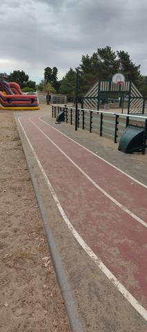
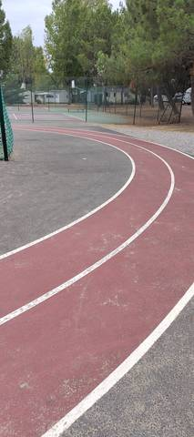

{kind=link}
{kind=link}
Une petite piste de deux couloirs, dans l'enceinte du Domaine du Collet — un camping, donc normalement on ne devrait même pas pouvoir y accéder : c'est réservé aux résidents. Les couloirs sont de qualité, bien tracés et en bon état, et c'est ce qu'il y a de mieux ici. Attention en revanche au revêtement : c'est de l'enrobé coloré, dur sous le pied, pas du tartan, malgré le rouge qui donne le change. Pour des enfants qui voudraient se challenger sur quelques tours, c'est idéal et c'est visiblement fait pour eux. Pour un adulte, à moins de vouloir attraper le tournis, il n'y a pas grand-chose à y faire.
Piste du Domaine du Collet (Les Moutiers-en-Retz)
44760 Les Moutiers-en-Retz · Loire-Atlantique
Piste du Domaine du Collet (Les Moutiers-en-Retz) is an athletics venue in Les Moutiers-en-Retz (Loire-Atlantique), Pays de la Loire, France. It has an asphalt / tarmac running track with 2 lanes.
Photos


A photo is surely still missing
Jump pits and throwing areas are what public data describes worst, and what gets photographed least. A close-up of the ground, a covered vault pit, a sand box gone to weeds: each adds what no field carries.
Send a photoNo GitHub account?Track
- Surface
- Asphalt / tarmac
- Lanes
- 2
- Setting
- Outdoor
L'anneau se trouve à l'intérieur du Domaine du Collet, un camping et village de vacances. Visite du 23 août 2026 : l'accès est réservé aux résidents, ce qui était jusqu'ici une hypothèse tirée de la situation du site et devient un constat. Aucun booléen d'accès n'est renseigné pour autant : un équipement privé dont l'usage est réservé à une clientèle n'est ni un stade ouvert au public, ni un stade communal fermé, et la fiche ne prétend pas trancher entre les deux. Qui n'est pas résident ne doit pas compter y courir.
Athlete reviews
Anneau repéré en balayant les city-stades du Pays de Retz recensés par la BD TOPO® de l'IGN, puis lu sur l'orthophoto IGN de 2025. Il reste absent du recensement du ministère **et** d'OpenStreetMap, où aucun tracé ne le représente. Visite sur place le 23 août 2026 : ce qui suit remplace les déductions d'orthophoto par un constat. Revêtement foulé au pied : **enrobé coloré, dur comme du goudron, et non un synthétique**. C'est le démenti d'une déduction que la couleur rendait naturelle — l'anneau est rouge sur l'orthophoto comme au sol, et n'importe qui en aurait conclu au tartan. Il n'en est rien, et c'est exactement le piège que l'enrobé coloré tend à la lecture aérienne. La teinte rouge est délavée par larges plaques, laissant le support apparaître ; le marquage blanc, lui, est net et bien entretenu. Deux couloirs, comptés sur place, correctement tracés et en bon état. Le développement n'a pas été mesuré et reste inconnu : ni le recensement, ni OpenStreetMap, ni la visite ne le donnent, et aucun chiffre n'est écrit ici. C'est un très petit anneau, dont un tour se boucle en quelques dizaines de secondes. Aucun agrès d'athlétisme n'a été repéré : ni sautoir, ni aire de lancer, ni ligne droite distincte de l'anneau. Le champ « agrès » reste vide plutôt que renseigné à une liste vide. L'anneau entoure un terrain multisport clos doté d'un panier de basket, et longe un court de tennis ; le reste de l'enceinte est un village de vacances, avec mobil-homes, structure gonflable et pins maritimes. L'usage visé est manifestement celui d'un équipement de loisir pour les enfants du camping, pas celui d'un équipement d'entraînement.
Other venues in the department
- Terrain des Loisirs
- Complexe sportif Mickaël Landreau (Arthon-en-Retz)
- Complexe sportif Joséphine Baker (Le Clion-sur-Mer)
- Stade Municipal des Chataigniers
- Gymnase Municipal J. Girard
- Centre Sportif du Val Saint Martin
Report an error or complete this record
Réf. c-piste-domaine-du-collet-les-moutiers-en-retz · Source: Community contribution — Data ES, French ministry for sport, Licence Ouverte 2.0. Records are self-declared and may be incomplete: check access conditions before travelling.